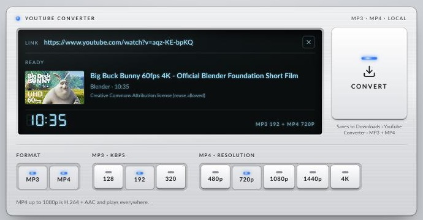

YouTube Converter
A small app that saves a YouTube video as MP3 audio, MP4 video, or both, straight into your Downloads folder. It runs on your own computer, not on a website.

What it does
- MP3, MP4 or bothOne click makes both files from the same link.
- Pick the quality128–320 kbps audio; 360p up to 4K video.
- Sorted foldersSaved to
Downloads/YouTube Converter/MP3and/MP4. - No ads, no uploadsEverything happens on your machine.
Install and run
You need Python 3.10+, FFmpeg and Node.js. On a Mac with Homebrew:
brew install python ffmpeg node
git clone https://github.com/randyvarianda/yt-converter.git
cd yt-converter
./run.shThen open http://127.0.0.1:8765. The first run sets up its own Python environment with yt-dlp.
If conversions start failing, YouTube has probably changed something. Update yt-dlp:
.venv/bin/pip install -U "yt-dlp[default]"Why isn't this a website?
Converting needs a program running on a computer: yt-dlp to get the video's streams from YouTube and FFmpeg to turn them into MP3 or MP4. A static page like this one can't run either, and online converter sites that do run them break YouTube's terms and get blocked. Running the app on your own machine avoids both problems.
Only download videos you own or have permission to use, such as your own uploads or Creative Commons content. Downloading other videos may break YouTube's Terms of Service and copyright law where you live.